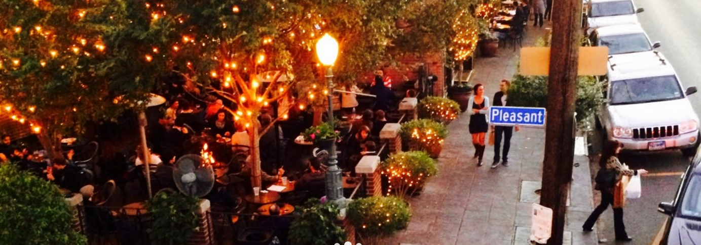
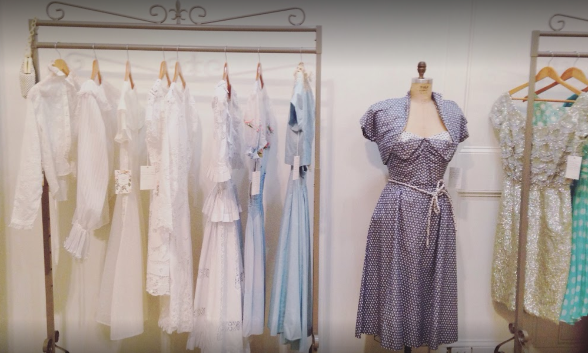

Hostel: $132
Plane tickets: $225 (if we decide to leave late at night)
TOTAL BASE COST: $357
obviously not including food and other purchases!
it's free to just enter the french quarter and dance in the streets
free art museums

$2 ferry ride

shopping on magazine street, with lots of cool vintage shops such as Century Girl, Funky Monkey, British Antiques, etc.

